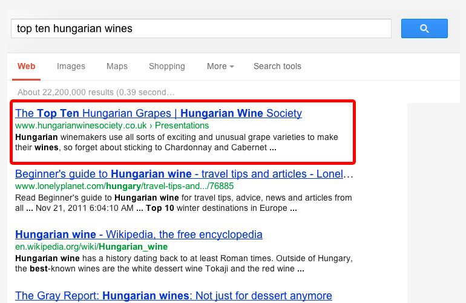

Introducción a SEO
En el diseño de páginas web hoy en día uno de los aspectos que más se comentan y se tienen en cuenta es el Search Engine Online (en adelante, SEO). Su necesidad nace de la utilidad que posee tanto como para los motores de búsqueda como para los propios usuarios. O dicho de otra forma, es necesario para que el motor de búsqueda sepa en qué consiste nuestra web y si es útil o no para los usuarios. El SEO es la mejor opción para dar a conocer tu sitio web mediante los motores de búsqueda y la relevancia frente al resultado de esas búsquedas, ya que los usuarios buscan la información que tu ofreces en tu página web.
Qué es el SEO
Por SEO entendemos el posicionamiento de una web en internet. Esto consiste en que nuestra página web pueda ser visualizada más fácilmente por los navegadores. Un dicho popular asegura que “el mejor lugar para guardar un cadáver es la segunda página de Google”, ya que el número de usuarios que usa otro buscador o accede a esta página es ínfimo.
Factores
Aunque existen una innumerable serie de factores para llevar a cabo el correcto posicionamiento de la web, los más básicos son:
- La autoridad, es decir, la popularidad que posee un sitio web. Cuantas más visitas tiene un sitio web mayor es el valor de la información que contiene (que no necesariamente su calidad). Este factor es sin duda importante, ya que se basa en la propia experiencia del usuario.
- La relevancia de una web, o dicho de otra forma, la relación entre una búsqueda de navegador y nuestra página web.
- La experiencia del usuario, que es uno de los factores que más tienen en cuenta los buscadores a la hora tanto de posicionar como de conservar una posición.
- La velocidad de carga de la web, ya que por regla general las páginas que más rápido cargan son las más visitadas
Aspectos de un web
Estos factores se pueden dividir a su vez en dos grupos, aquellos que afectan aspectos internos de la web (on-site) y aquellos que afectan aspectos externos (off-site).
- Respecto a los internos, refieren al sistema y a la estructura interna del sitio, es decir, se dedica al desarrollo de la calidad del sitio y de la experiencia del usuario con la misma.
- Entre otras destacan el tiempo de carga, la percepción (del usuario) de la calidad de la información y la calidad de la web (en líneas generales).
- Respecto al contenido se premia a aquellas webs de contenido único y no el número de coincidencias en las palabras clave. Esto último puede ser considerado como spam, contra lo que los buscadores se defienden usando algoritmos de análisis semántico.
- Respecto al comportamiento del usuario en la web, se evalúa la navegación, los clicks en los enlaces, las páginas vistas, la permanencia en un sitio web…
- Respecto a los externos, podemos considerar los factores más importantes el número y calidad de los enlaces, la presencia en redes sociales, menciones en distintos medios, la autoridad de la marca y el rendimiento en los resultados de búsqueda (CRT),etc…
También hablamos de White Hat o Black Hat en función del seguimiento que se hace de las recomendaciones del motor de búsquedas. En resumen, el Black Hat consiste en prácticas poco éticas que ofrecen muchos beneficios a corto plazo y (generalmente) no aporta valor; en cambio, el White Hat consiste en las técnicas que mejoran la relevancia una pagina para los buscadores a través de aportarle valor a los usuarios.
Funcionamiento de un motor de búsqueda
Todo lo dicho anteriormente es importante, pero quizá deberíamos tener en cuenta como funciona un motor de búsqueda. Esto se puede resumir en dos pasos. El rastreo consiste en bots que recorren las páginas a través de los enlaces (importante tener una buena estructura de enlaces) y se retroalimenta, es decir, utiliza los datos de rastreo anteriores y de sitemaps (documento de una web donde se listan todas las páginas que conforman una web) proporcionadas por otras webs. De ahí la importancia de tener un tiempo de carga óptimo y un contenido actualizado.
Realizado el rastreo estas páginas se incluyen en un índice, es decir, se indexan. En este índice se ordenan por su contenido, autoridad y relevancia. En un principio los motores de búsqueda se basaban en el número de veces en el que se repetía una palabra, pero hoy día también se tienen en cuenta la fecha de publicación, si contiene imágenes, o videos,... el resultado de todo esto es lo que muestra el motor de búsqueda en relación a nuestra búsqueda.
